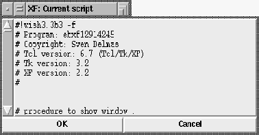

This procedure saves the current application, and displays it in a text box. The user can view and edit the resulting code. When he confirms the changes, the application is reloaded.
 Figure: The procedure XFProcProgEditScript